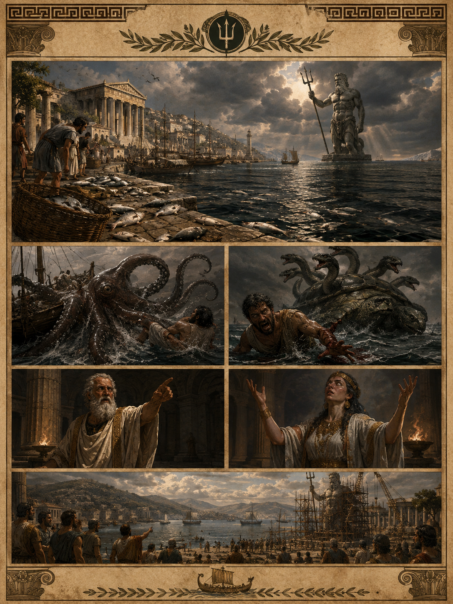
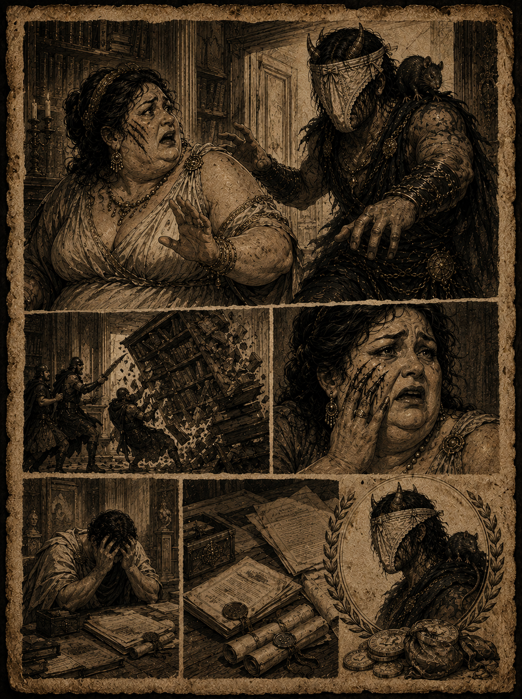
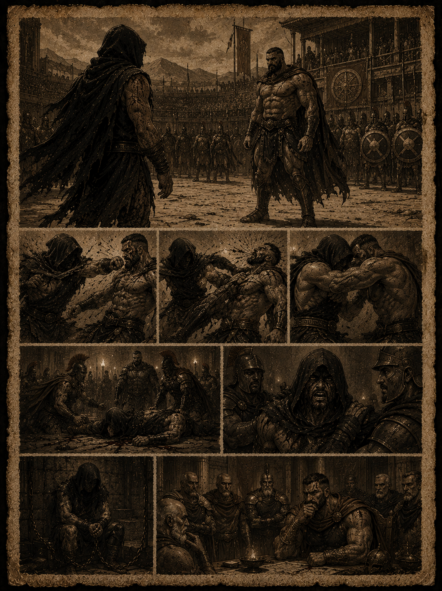
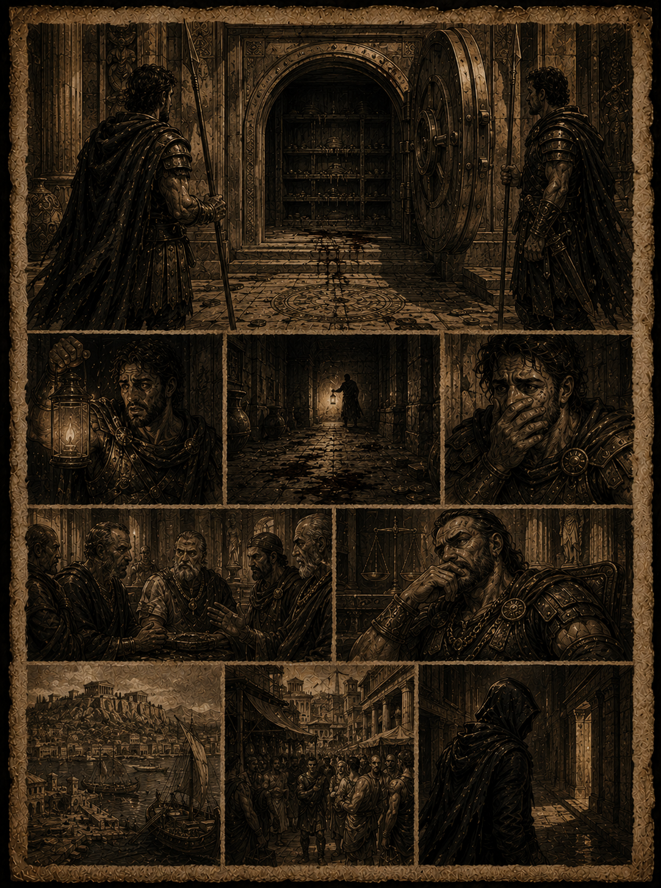
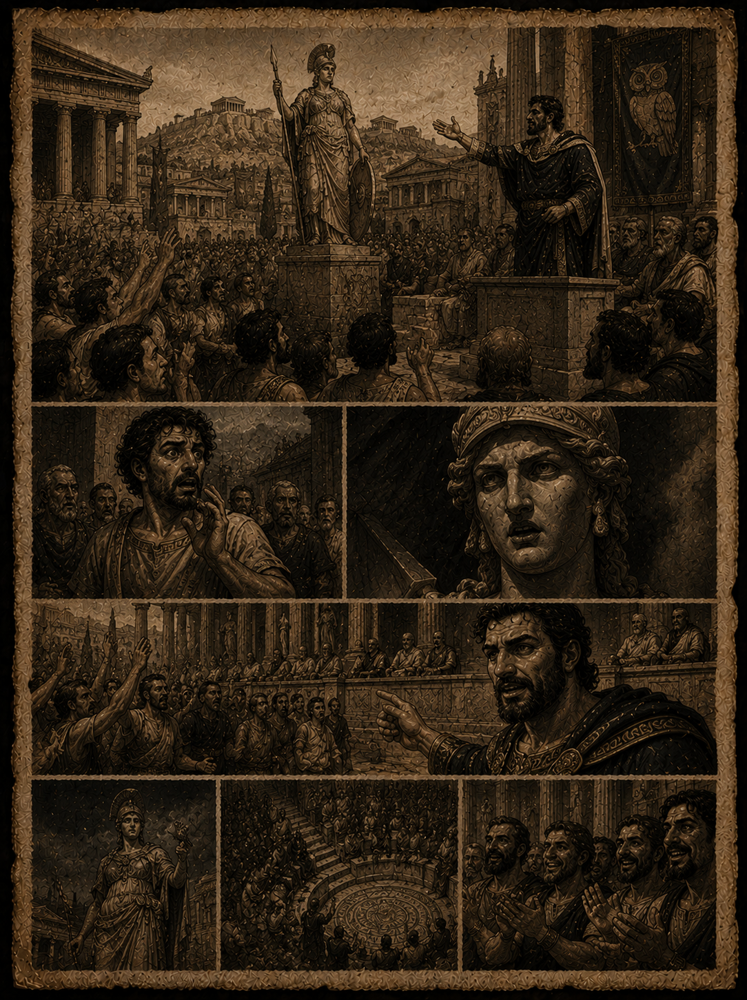
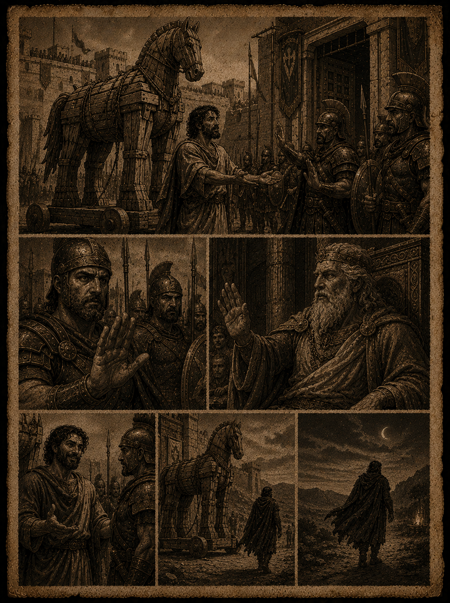
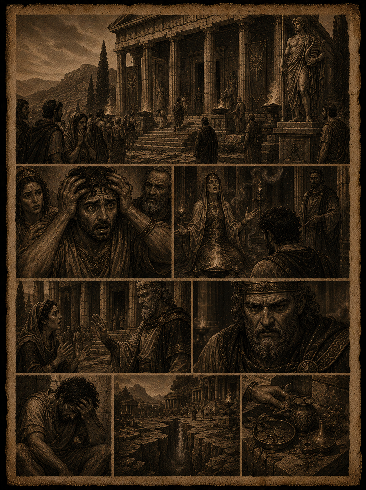

BASE REGRADA
Utilizamos a estrutura do D&D 5.5 (2024).
~ BEM VINDOS ~
ERA DOS HERÓIS
~ um mundo onde os deuses caminham entre mortais ~
20
PRESS START
▼ PRÓLOGO ▼
Explore um mundo onde os deuses caminham entre mortais. Baseado no sistema D&D 5.5 (2024), com mecânicas únicas e ambientação épica na Grécia Mitológica. Crie seu herói, escolha sua raça, ascenda à grandeza e que os deuses guiem seus dados.
▣ INFORMAÇÕES DO SISTEMA ▣
ATRIBUTOS
Distribuição padrão de Pontos Base: 16, 16, 14, 12, 10, 10.
TEMPORADA
Rebute da 1ª Temporada.
CENÁRIO
Ambientação focada na Grécia Mitológica.
▼ NOTÍCIAS DA SEMANA ▼
✦ O ARAUTO DE KRUMA ✦ Edição Semanal do Mundo Mitológico

Corintos
EVOLUÇÃO OU FÚRIA DE POSEIDON?
Em Corintos, peixes começaram a aparecer mortos ao longo da baía do porto fluvial que liga a cidade a Creta. Moradores locais afirmam que o peixe está contaminado e impróprio para consumo. Diante da escassez, alguns pescadores arriscaram-se além da baía, rumo ao mar aberto — mas poucos retornaram.
Depoimento de Doristas, pescador: "Eu estava lá, vi com meus próprios olhos uma lula gigante, com uma gosma preta grudada em seus tentáculos! Ela virou nosso barco e engoliu meus amigos um a um. Não houve tempo nem para gritar por socorro."
Depoimento de Kalyx, pescador sobrevivente: "Era uma tartaruga gigante, com cabeça de Hidra, coberta daquela mesma gosma preta. Vejam — ela arrancou meu braço com uma única mordida. Ainda ouço o barulho dos meus ossos quebrando."
Depoimento do Sumo Sacerdote Filemon, do Templo de Poseidon: "Vejam a verdade: os Deuses estão furiosos com a promiscuidade desta cidade, e estão enviando criaturas para nos castigar!"
Depoimento da Sacerdotisa Melantha, vidente do templo: "Poseidon está em fúria! Eu o vi em minhas visões — ele continuará mandando mais e mais pragas sobre nossas águas. Devemos erguer uma estátua gigante em sua homenagem, ou sofreremos ainda mais a fúria do Senhor dos Oceanos."
O comércio local encontra-se abalado, pois a maior movimentação comercial da baía vinha justamente da venda de peixes. Diante da crise, alguns comerciantes já estudam a possibilidade de abrir uma nova rota marítima, enquanto outros defendem a construção imediata da estátua em homenagem ao deus dos mares, na esperança de aplacar sua fúria antes que novas criaturas emerjam das profundezas.

Kruma
O PERVERTIDO DE OLHOS AMARELOS DE KRUMA
A mansão do Doutor Xantos, um dos advogados mais brilhantes de Kruma, foi assaltada na madrugada de ontem, tendo como única testemunha sua esposa, a Senhora Drixia, que concedeu depoimento a este arauto sobre o terrível ocorrido.
Depoimento da Senhora Drixia: "Eu estava no corredor quando, de repente, ouvi um barulho vindo da Biblioteca. Chamei os seguranças imediatamente, e eles entraram no cômodo — mas o terrível assaltante já estava escondido, à espreita, esperando a oportunidade de escapar. Quando os guardas entraram, ele empurrou a estante de livros sobre eles e avançou contra mim. Vejam a marca da mão dele em meu rosto! Aquele ser asqueroso possuía chifres e olhos amarelos — infelizmente não consegui ver seu rosto, pois o Pervertido usava uma calcinha como máscara. E, como se não bastasse, era repugnante: carregava um rato sobre o ombro."
O Doutor Xantos evitou dar depoimentos, alegando estar profundamente abalado — o assaltante marcara o rosto de sua amada esposa. Ainda assim, o advogado já acionou as autoridades de Kruma e convocou alguns de seus aliados, uma vez que o criminoso, além de ferir sua esposa, também roubou documentos de grande importância.
Atualmente, ele oferece a recompensa de 1.500 dracmas pela cabeça do assaltante — vivo ou morto.

Esparta
SANGUE NA ARENA: DESCONHECIDO DESAFIA DRAKION, O INQUEBRÁVEL
Nos campos de treino ao sul de Creta, um forasteiro encapuzado surgiu na arena espartana e desafiou publicamente o Rei Drakion para um duelo até a submissão — algo que ninguém ousava fazer há quase uma década.
Depoimento de Kassian, veterano do Conselho de Generais: "Ele não trouxe armas, não trouxe escudo. Apenas entrou na arena e disse que tinha vindo cobrar uma dívida do rei. Drakion riu — e isso já é raro. Lutaram por quase uma hora. O forasteiro acertou três golpes que deveriam ter matado qualquer homem, e Drakion sequer sangrou como deveria. No fim, o desconhecido foi derrubado, mas antes de ser levado pelos guardas, gritou algo que ainda ecoa entre nós: 'Eu vi seu túmulo, Inquebrável. E ele já está vazio há tempo demais.'"
O forasteiro está preso nas masmorras de Esparta aguardando julgamento pelo Conselho de Generais, porém recusa-se a revelar seu nome ou de onde veio. Drakion, por sua vez, ordenou que ninguém tocasse no prisioneiro até que ele mesmo decida seu destino — decisão que tem gerado sussurros entre os generais mais antigos, pois o rei jamais mostrou tanta cautela diante de um oponente já derrotado.

Corintos
OS COFRES QUE CHORAM: DESAPARECIMENTO ABALA O CONSELHO MERCANTE
Um dos cofres mais antigos guardados sob a cidade de Corintos foi encontrado aberto na manhã de terça-feira — vazio, sem qualquer sinal de arrombamento. O caso já chegou aos ouvidos de Aureon Varkas, o Senhor das Moedas, que convocou reunião de emergência do Conselho Mercante.
Depoimento de Nomarco Filias, guarda dos cofres: "Eu vigiava aquela porta há doze anos, e ela nunca havia se movido sozinha. Naquela noite, ouvi um som metálico, como moedas caindo em cascata, mas quando desci não havia ninguém. A porta estava aberta, o cofre vazio, e havia um cheiro estranho, doce demais, como incenso queimado. Nenhuma moeda foi encontrada nas ruas, nos mercados, em lugar nenhum. É como se o ouro tivesse voltado para casa."
Aureon Varkas se recusou a comentar publicamente o valor exato do prejuízo, alegando apenas que "certas dívidas antigas sempre encontram um jeito de serem cobradas." Rumores nas tavernas do porto já apontam para o envolvimento do lendário Homem Sem Sombra, o assassino sem rosto que, segundo as lendas, ora trabalha para o Senhor das Moedas, ora contra ele.

Atenas
A ESTÁTUA FALOU? PÂNICO TOMA A ASSEMBLEIA DE ATENAS
Durante sessão pública da Assembleia, um cidadão interrompeu o discurso de Leônidas Asterion, o Rei das Vozes, afirmando ter ouvido a antiga estátua no centro da cidade sussurrar antes de um voto decisivo.
Depoimento de Doristo, comerciante de cerâmica: "Eu estava perto da estátua esperando minha vez de falar, quando ouvi, claro como o sino do templo: 'vote conforme já foi decidido.' Olhei ao redor — ninguém próximo o suficiente para ter dito aquilo. Contei aos outros e fui chamado de louco, mas juro pelos deuses do Olimpo que aquela pedra tem uma voz."
Leônidas Asterion classificou o episódio como "fadiga e imaginação do povo", encerrando o debate com um discurso que, segundo testemunhas, "convenceu até os que discordavam minutos antes." A Assembleia aprovou a proposta por unanimidade. Nenhuma investigação foi aberta sobre a estátua.

Troia
O PRESENTE QUE NINGUÉM PEDIU: MERCADOR OFERECE ESTÁTUA DE MADEIRA AO REI PRÍAMO
Um mercador estrangeiro, ainda não identificado, apresentou-se aos portões de Troia oferecendo de presente ao Rei Príamo uma estátua de madeira em forma de cavalo, "em sinal de paz entre os povos". A proposta foi recebida com desconfiança imediata pela guarda real.
Depoimento de Nestor Kallis, capitão da guarda: "Ninguém aqui esquece a profecia sobre um presente que não deve ser aceito. O mercador insistiu, disse que era apenas um símbolo de boa vontade, mas seus olhos não combinavam com o sorriso. Mandamos ele embora antes mesmo de a estátua cruzar os portões."
O Rei Príamo recusou o presente e ordenou reforço na vigilância das muralhas "por precaução". O mercador desapareceu na mesma noite, e ninguém em Troia sabe seu verdadeiro nome ou de onde veio — apenas que, segundo os guardas, ele "falava grego perfeito demais para um estrangeiro."

Delfos
PROFECIA PERDIDA: PEREGRINO ENLOUQUECE APÓS CONSULTAR O ORÁCULO DE DELFOS
Um peregrino que buscava respostas sobre o futuro de sua família retornou do Templo de Apolo em estado de choque, incapaz de repetir as palavras que ouviu da sacerdotisa em transe. O caso reacendeu antigos boatos sobre a "profecia perdida" guardada pelo sacerdote Eryon Solarys.
Depoimento de Elissa de Delfos, parente do peregrino: "Ele entrou andando e saiu sendo carregado. Não fala, não come direito, só repete um número: sete. Sete o quê, ninguém sabe. Fomos ao templo pedir explicações e Eryon apenas disse que 'nem toda verdade deveria ser ouvida antes da hora'."
O Templo de Apolo negou qualquer irregularidade no ritual e afirmou que o peregrino "recebeu exatamente o que buscou." Eryon Solarys não concedeu mais declarações, mas moradores locais evitam agora se aproximar da fenda sagrada sem antes deixar oferendas em dobro.
1 / 7
▣ TALENTOS ▣
▲▼ navegue · ⓐ leia · talentos do D&D 5.5 (2024)
⚔ TALENTOS DE COMBATE ⚔
ATACANTE SELVAGEM
Combate · Pré: Nenhum
Sempre que você rola um dado de dano para ataques com armas no seu turno, pode rolar novamente se o resultado for 1 (deve usar a nova rolagem).
DUELISTA DEFENSIVO
Combate · Pré: DEX 13+
Empunhando arma de acuidade na qual seja proficiente, quando atingido por ataque corpo-a-corpo, use sua reação para somar o bônus de proficiência à CA contra esse ataque.
MESTRE EM ARMADURAS PESADAS
Geral · Pré: Nível 4+ · Treino em Armadura Pesada
+1 em FOR ou CON (máx 20). Vestindo armadura pesada, dano Contundente, Cortante e Perfurante recebido é reduzido em valor igual ao seu Bônus de Proficiência.
✦ SUPORTE E MAGIA ✦
ATIRADOR DE MAGIA
Magia · Pré: Conjurar 1+ magia
Magias com ataque têm alcance dobrado e ignoram meia/três-quartos de cobertura. Aprende um truque com ataque (bardo, bruxo, clérigo, druida, feiticeiro ou mago).
CONJURADOR BÉLICO
Geral · Pré: Nível 4+ · Conjuração
+1 em INT/SAB/CAR. Vantagem em CON para Concentração. Pode trocar Ataque de Oportunidade por magia de 1 ação contra o alvo. Realiza componentes somáticos com armas/escudo nas mãos.
SORTUDO
Geral · Pré: Nenhum
Você possui Pontos de Sorte iguais ao seu Bônus de Proficiência. Recupera todos em um Descanso Longo. Que as Moiras estejam contigo.
▼ MESA DE ROLAGEM ▼
Escolha seu dado, herói. Que as Moiras decidam o destino.
--
aguardando rolagem...
▣ CALENDÁRIO DE SESSÕES ▣
-
07
MAI✔ CONCLUÍDASESSÃO 01 · A FULGA DE KARCERUS
Os heróis tentam escapar do destino cruel entre ficar e enfrentar a temivel fera que esta destruindo o coliseu de Karcerus.
ARCO: ESCAPANDO DO INFERNO -
21
JUN✔ CONCLUÍDASESSÃO 02 · A FULGA DE KARCERUS PARTE 02
Os herois conseguiram fugir do coliseu porem alguns de seus aliados acabaram ficando para tras. Eles agora se encontram em uma caverna abandona em baixo do coliseu. o que sera que os aguarda?
DUNGEON · 14:00hs -
17
JUL✔ CONCLUÍDASESSÃO 03 · AS PORTAS DE KRUMA
Sob um céu que ainda cheira a sal e fumaça de forja, três desconhecidos cruzam os portões invisíveis da cidade-estado de Kruma pela primeira vez. Não se conhecem — ainda. O destino, porém, já teceu os fios que os uniram nesta noite. Nas ruas de pedra escura, entre o brilho das tochas e o sussurro dos mercadores, uma nova lenda começa a ser escrita. Os deuses observam em silêncio... e as Moiras já apostam quem sobreviverá até o amanhecer.
ARCO: O INÍCIO DA LENDA · 18:00hs · GRUPO DE 3 HERÓIS -
18
JUL✔ CONCLUÍDASESSÃO 04 · A FUGA DE KARCERUS
Cinco almas condenadas despertam acorrentadas nas profundezas da ilha-prisão de Karcerus, onde o mar nunca dorme e os gritos dos esquecidos ecoam pelas muralhas encharcadas. Não há julgamento, não há clemência — apenas a escuridão, os carcereiros implacáveis e uma única certeza: fugir ou apodrecer entre as rochas. Enquanto a maré sobe e os corredores se fecham como fauces de uma besta, o grupo terá que decidir até onde está disposto a ir por sua liberdade.
ARCO: ESCAPANDO DO INFERNO · 18:00hs · GRUPO DE 5 HERÓIS -
22
JUL▶ ABERTASESSÃO 05 · O SOLSTÍCIO DE DIONÍSIO
Na noite mais longa do ano, os tambores de Dionísio ecoam pelos vinhedos sagrados, e o vinho corre como sangue divino pelas ruas enfeitadas com hera e uvas maduras. Três heróis são convocados por um chamado que não podem ignorar — um perfume doce e inebriante que carrega promessas e perigos em igual medida. Diz a lenda que, nesta noite, o véu entre mortais e o divino se afina, e aqueles que ousam dançar sob a lua do Solstício podem tanto receber bênçãos quanto atrair a fúria das Ménades. Que os deuses guiem seus dados, pois o vinho já foi derramado e o ritual está prestes a começar.
ARCO: O SOLSTÍCIO DE DIONÍSIO · 18:00hs · GRUPO DE 3 HERÓIS -
25
JUL✔ CONCLUÍDASESSÃO 06 · A FUGA DE KARCERUS PARTE 02
A maré subiu, mas os corredores encharcados de Karcerus ainda escondem algo pior do que carcereiros. No coração das profundezas, um guardião nascido do próprio sofrimento da ilha-prisão desperta para barrar o caminho dos fugitivos. Não há mais tempo para hesitar — entre as correntes quebradas e o eco de gritos antigos, os quatro sobreviventes terão que enfrentar a besta que guarda a última porta antes da liberdade... ou da perdição.
SUB-BOSS · ARCO: ESCAPANDO DO INFERNO · 18:00hs · GRUPO DE 4 HERÓIS -
09
AGO▶ ABERTASESSÃO 07 · BEM VINDO A CRETA
Os portões marítimos de Creta recebem os heróis sob um céu carregado de gaivotas inquietas e um cheiro estranho de peixe podre que paira sobre o cais. Mercadores sussurram entre si, evitando os olhos dos recém-chegados, enquanto pescadores fitam o horizonte com o medo grudado no rosto. Nos últimos dias, corpos de peixes cobrem a maré baixa, e histórias de tentáculos negros, cascos partidos e uma tartaruga com cabeça de Hidra correm de taverna em taverna. Diz-se que o próprio Poseidon voltou seu olhar furioso para estas águas — e que poucos dos que ousaram cruzar a baía voltaram para contar a história. É neste porto amaldiçoado, entre redes rasgadas e sacerdotes que já discutem erguer uma estátua para aplacar o Senhor dos Oceanos, que a jornada dos heróis em Creta está prestes a começar.
ARCO: A FÚRIA DE POSEIDON · 18:00hs · GRUPO DE 4 HERÓIS -
??
???✖ BLOQUEADASESSÃO ??? · ????
Reservado para o boss da Campanha
BOSS · CAMPANHA
▼ INFORMAÇÕES DA MESA ▼
SISTEMA
D&D 5.5 (2024)
D&D 5.5 (2024)
MESTRE
Evandro Neto de Oliveira
Evandro Neto de Oliveira
JOGADORES
4 / 5 (1 vaga!)
4 / 5 (1 vaga!)
PLATAFORMA
VTT + Presencial
VTT + Presencial
▣ FERRAMENTAS DE JOGO ▣
-
◈
FICHA▶ ACESSARFICHA ONLINE
Gerencie seus status e atributos em tempo real. Ferramenta oficial da campanha.
SAVE AUTOMÁTICO -
▣
VTT▶ ACESSARMAPA VIRTUAL
Sistema de mapa com Fog of War e grid dinâmico. Servido na rede local do Mestre.
FOG OF WAR · GRID -
✎
BETA▶ TESTEFICHA 2.0
Criador de fichas em fase de teste. Use por sua conta e risco, herói.
EM TESTES
▼ INFORMAÇÕES DA MESA ▼
SISTEMA
D&D 5.5 (2024)
D&D 5.5 (2024)
PONTOS BASE
16,16,14,12,10,10
16,16,14,12,10,10
TEMPORADA
Rebute da 1ª
Rebute da 1ª
CENÁRIO
Grécia Mitológica
Grécia Mitológica